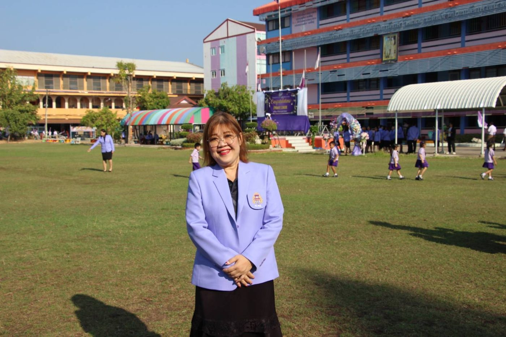
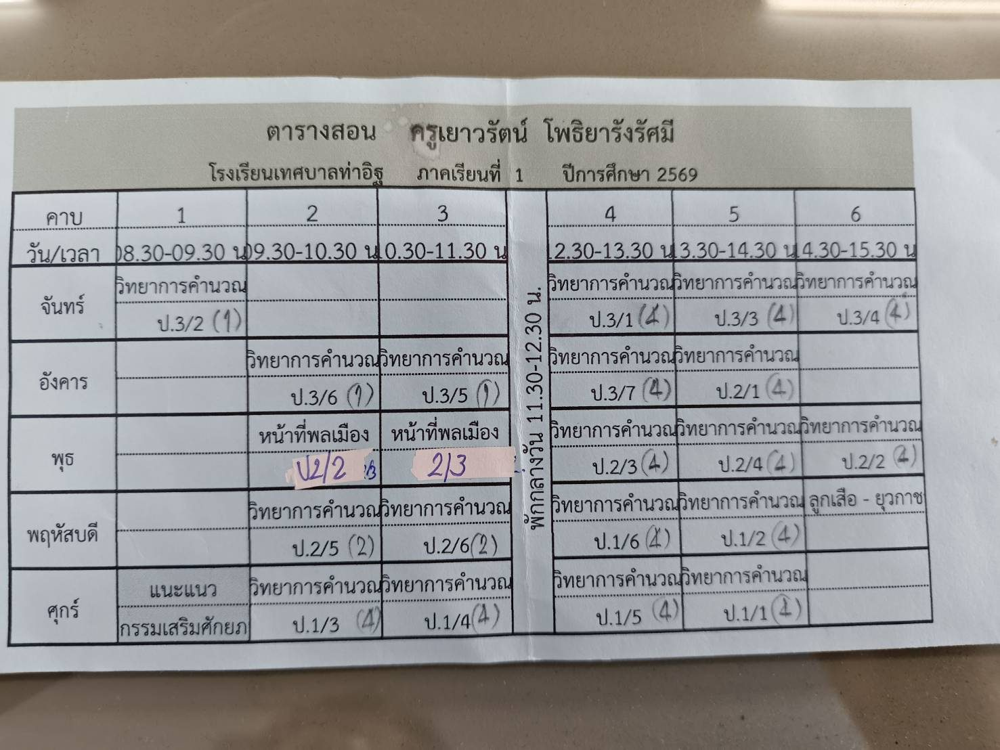
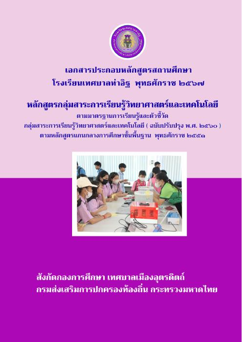

| ชื่อ – นามสกุล | นางสาวเยาวรัตน์ โพธิยารังรัศมี |
|---|---|
| ตำแหน่ง / วิทยฐานะ | ครู / ครูชำนาญการพิเศษ (คศ. 3) |
| สถานศึกษา | โรงเรียนเทศบาลท่าอิฐ |
| สังกัด | กองการศึกษา เทศบาลเมืองอุตรดิตถ์ จังหวัดอุตรดิตถ์ |
| กลุ่มสาระ | วิทยาศาสตร์และเทคโนโลยี (สาระเทคโนโลยี – วิทยาการคำนวณ) |
| วิชาที่สอน | วิทยาการคำนวณ ป.1–ป.3 · หน้าที่พลเมือง ป.2 · ยุวกาชาด |
| ผู้อำนวยการสถานศึกษา | นางสาวบุญเพิ่ม สอนภักดี |

สอนวิทยาการคำนวณ 19 ห้อง (ป.1/1–1/6, ป.2/1–2/6, ป.3/1–3/7) · กดที่รูปเพื่อขยาย
เป็นไปตามที่ ก.จ. ก.ท. และ ก.อบต. กำหนด
| 1.1 ชั่วโมงสอนตามตารางสอน (22 ชม./สัปดาห์) | |
| รายวิชาเทคโนโลยี (วิทยาการคำนวณ) ป.1–ป.3 | 19 ชม./สัปดาห์ |
| รายวิชาหน้าที่พลเมือง ป.2 | 2 ชม./สัปดาห์ |
| กิจกรรมพัฒนาผู้เรียน (ยุวกาชาด) | 1 ชม./สัปดาห์ |
| 1.2 งานส่งเสริมและสนับสนุนการจัดการเรียนรู้ (14 ชม./สัปดาห์) | |
| ออกแบบและจัดทำแผนการจัดการเรียนรู้ | 2 ชม./สัปดาห์ |
| จัดทำข้อมูลและติดตามระบบดูแลช่วยเหลือนักเรียน | 2 ชม./สัปดาห์ |
| จัดหา สืบค้น หรือจัดทำสื่อการเรียนรู้ | 2 ชม./สัปดาห์ |
| จัดหา/จัดทำเครื่องมือวัดและประเมินผล | 2 ชม./สัปดาห์ |
| ตรวจผลงานนักเรียน | 2 ชม./สัปดาห์ |
| คณะกรรมการปรับปรุงและพัฒนาหลักสูตร | 2 ชม./สัปดาห์ |
| จัดทำวิจัยเพื่อพัฒนาผู้เรียน | 2 ชม./สัปดาห์ |
| 1.3 งานพัฒนาคุณภาพการจัดการศึกษาของสถานศึกษา | |
| ปฏิบัติหน้าที่กิจกรรมยุวกาชาด | 120 ชม./ปีการศึกษา |
| ผู้รับผิดชอบโครงการไหว้ครู | 12 ชม./ปีการศึกษา |
| ผู้ตรวจเวรสวัสดิการ วันพุธ | 80 ชม./ปีการศึกษา |
| ชุมชนการเรียนรู้ทางวิชาชีพ (PLC) | 80 ชม./ปีการศึกษา |
| 1.4 งานตอบสนองนโยบายและจุดเน้น (16 ชม./ปีการศึกษา) | |
| กิจกรรมปลูกผักรักษ์โลก ป.2 | 3 ชม./ปีการศึกษา |
| พิธีเข้าประจำหมู่ยุวกาชาด | 3 ชม./ปีการศึกษา |
| เดินทางไกลลูกเสือ ยุวกาชาด ป.2 | 6 ชม./ปีการศึกษา |
| นิทรรศการปลูกผักอินทรีย์ | 4 ชม./ปีการศึกษา |
ระดับการปฏิบัติที่คาดหวังของวิทยฐานะชำนาญการพิเศษ: ริเริ่ม พัฒนา (Originate & Improve) · กดที่หัวข้อเพื่อดูงาน ผลลัพธ์ และตัวชี้วัด
“การเขียนโปรแกรมบล็อก (Block-based Coding) เช่น ScratchJr หรือ Code.org ต้องใช้การอ่านคำสั่ง เช่น ‘ซ้าย’ ‘ขวา’ ‘วนซ้ำ’ — เด็กที่ยังอ่านหนังสือไม่คล่องจะเกิดอุปสรรคทันที” → พัฒนาการจัดการเรียนรู้แบบผสมผสานร่วมกับแนวคิด Gamification เพื่อส่งเสริมความสามารถในการแก้ปัญหา รายวิชาวิทยาการคำนวณ ชั้นประถมศึกษาปีที่ 2
การเลือกรูปแบบการจัดการเรียนรู้ที่เหมาะกับผู้เรียนเป็นปัจจัยสำคัญให้ผู้เรียนบรรลุเป้าหมาย นักเรียน ป.2 ที่ยังอ่านไม่คล่องจะติดขัดกับคำสั่งในโปรแกรมแบบบล็อก ครูจึงนำแนวคิด Gamification — การนำกลไกของเกม เช่น คะแนน เหรียญตรา ระดับขั้น และภารกิจ มาใช้ในกิจกรรมการเรียน — เพื่อสร้างบรรยากาศสนุก กระตุ้นความสนใจ เพิ่มการมีส่วนร่วม และส่งเสริมกระบวนการแก้ปัญหา (Kapp, 2012)
ของนักเรียน ป.2 ขึ้นไป สามารถแก้ปัญหารายวิชาวิทยาการคำนวณ ตรงตามหลักสูตรแกนกลาง และมีผลสัมฤทธิ์ทางการเรียนสูงขึ้น
นักเรียน ป.2 โรงเรียนเทศบาลท่าอิฐ วิเคราะห์และแก้ปัญหาวิทยาการคำนวณได้ มีความรู้ตามตัวชี้วัดสาระวิทยาศาสตร์และเทคโนโลยี มีสมรรถนะสำคัญ และเรียนรู้อย่างมีความสุข
ScratchJr · Code.org · บัตรคำสั่งลูกศร (ขึ้น/ลง/ซ้าย/ขวา) · ใบงานเขียนโปรแกรมบนตาราง · แผนผังลำดับงาน (Flowchart)
หลักฐานการปฏิบัติงานจริงตามข้อตกลง · กดที่รูปเพื่อขยาย และเลื่อนดูรูปถัดไปได้

โรงเรียนเทศบาลท่าอิฐ ตามหลักสูตรแกนกลางการศึกษาขั้นพื้นฐาน พ.ศ. 2551 (ฉบับปรับปรุง 2560) ครอบคลุมสาระเทคโนโลยี (วิทยาการคำนวณ) มาตรฐาน ว 4.2 — ใช้แนวคิดเชิงคำนวณแก้ปัญหาอย่างเป็นขั้นตอน และใช้เทคโนโลยีสารสนเทศอย่างปลอดภัยและมีจริยธรรม
เปิดหลักสูตร (PDF)รายวิชาวิทยาการคำนวณ กลุ่มสาระวิทยาศาสตร์และเทคโนโลยี
หน่วยที่ 2 การเขียนโปรแกรมเบื้องต้น · ตัวชี้วัด ว 4.2 ป.2/1, ป.2/2
รูปแบบการสอน: สืบเสาะหาความรู้ (5Es) และการปฏิบัติ
ดาวน์โหลดแผน (.docx)ตัวชี้วัด ว 4.2 ป.1/1, ป.1/2, ป.1/4
อุปกรณ์คอมพิวเตอร์ · Flowchart · เขียนโปรแกรมด้วยบัตรคำสั่งบนตาราง (ป.2) — ดูทั้งหมดได้ในแท็บ “ใบงานวิทยาการคำนวณ” ของภาพกิจกรรม
ประเมินโดยคณะกรรมการ 3 คน · เกณฑ์ผ่านต้องได้คะแนนจากกรรมการแต่ละคนไม่ต่ำกว่าร้อยละ 70
ข้อตกลงในการพัฒนางานตามมาตรฐานตำแหน่ง (ด้านการจัดการเรียนรู้ · การส่งเสริมสนับสนุน · การพัฒนาตนเองและวิชาชีพ)
ประเด็นท้าทาย: วิธีดำเนินการ 20 คะแนน · ผลลัพธ์การเรียนรู้ที่คาดหวัง 20 คะแนน (เชิงปริมาณ 10 · เชิงคุณภาพ 10)
คะแนนเต็ม 100 · ผ่านเกณฑ์เมื่อได้ ≥ 70 คะแนนจากกรรมการทุกคน · ระดับการประเมิน 1–4 (ต่ำกว่าระดับที่คาดหวังมาก → สูงกว่าระดับที่คาดหวัง)